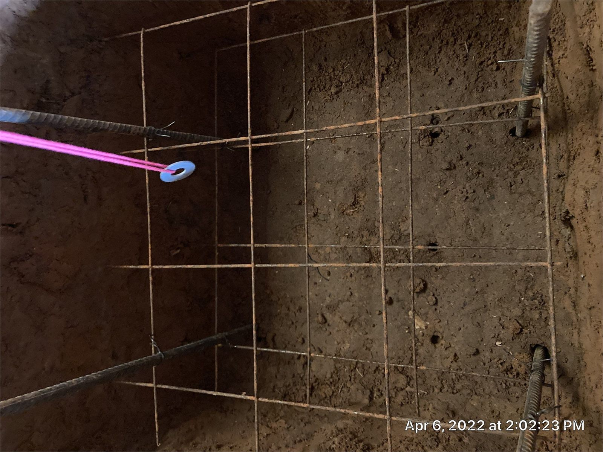
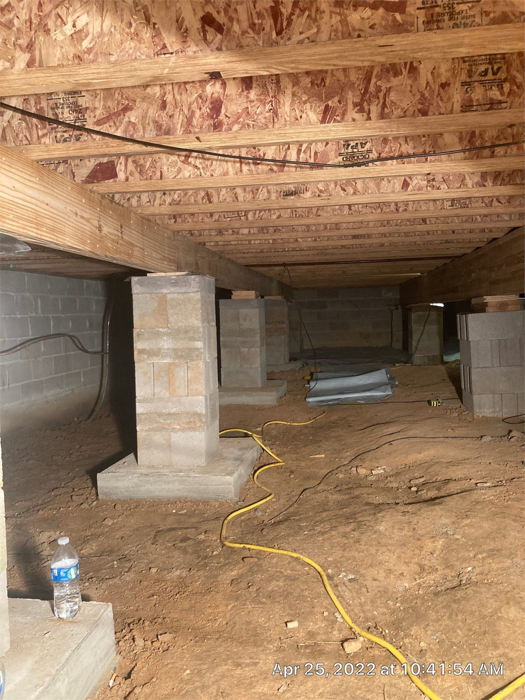

Doors Won't Open or Shut
Changes around a door opening can be an early sign that the building is moving. The opening is evidence to document, not the location to diagnose in isolation.
Uneven floors, damaged piers, widening cracks, and doors that no longer fit can point to movement beneath the building. Crain Bros Inc traces the visible changes through the framing, supports, contact surfaces, soil, and water conditions before planning structural correction.
Foundation movement is often discovered inside the building before the support problem is visible. Doors begin rubbing, floors feel uneven, trim separates, wall cracks change, or a repaired finish opens again.
These symptoms are useful evidence, but none of them identifies the cause by itself. The investigation must follow the movement from the affected room through the framing and structural support points to the foundation below.
Talk through the Changes You Are Seeing
Changes around a door opening can be an early sign that the building is moving. The opening is evidence to document, not the location to diagnose in isolation.

Cracking through this masonry pier shows damage at a structural support point beneath the building. The repair decision must account for the pier, its footing, the framing it supports, and any movement visible above.
Piers, footings, and foundation walls depend on the material beneath and around them. Concentrated runoff, recurring crawlspace water, or gradual soil loss can change that support even when the visible damage appears elsewhere in the building.
When water or erosion is contributing to movement, structural work and water control must be coordinated. Crain Bros Inc separates the structural repair from the larger drainage and waterproofing scope while making sure the two plans do not work against each other.
Request a Connected Property Evaluation
Water has carried soil away beside the crawlspace foundation. Correcting the support without controlling the water path can leave the repaired area exposed to continued erosion.

Moisture visible through the masonry helps locate where water is reaching the foundation. The source may need to be corrected before structural and finish repairs can remain dependable.

Erosion around this crawlspace foundation has reduced the soil supporting the masonry. The solution must restore dependable structural support and stop the water movement that caused the loss.
The evaluation follows the structural load path rather than treating each crack or uneven room as a separate problem. Floor framing, beams, bearing walls, piers, foundation walls, footings, and supporting soil are reviewed as connected parts of the building.
Prior repairs, temporary shims, displaced blocks, moisture staining, damaged masonry, and unsupported framing are documented before a correction sequence is chosen. This reduces the risk of lifting one area while leaving another weak structural support point unaddressed.
Schedule a Foundation Support Evaluation
This deteriorated pier is part of the floor-support system. Its condition, alignment, bearing surface, and connection to the framing must be evaluated before structural correction begins.
House leveling is not a single-point lift. Correction is planned around the framing layout, support locations, amount of settlement, condition of the materials, and the movement the building can safely receive.
New or repaired supports are positioned beneath structural load paths rather than wherever access is easiest. Adjustment proceeds in a controlled sequence while connected floors, walls, openings, and finishes are monitored for change.
The objective is dependable structural support and improved alignment. A perfectly level finish surface is not promised when the building contains permanent material distortion, prior alterations, or conditions outside the repair area.

A new pier adds a dependable structural support point beneath the floor system. Its location is coordinated with the framing load path and the amount of correction planned for the structure.

These added supports strengthen the structure beneath the framing so correction can proceed in a planned sequence. This approved image will also represent the Foundation Repair page in social sharing.

Steel reinforcement is installed before the footing is placed so the new support has a stronger base for transferring structural loads into the soil.

The completed footing, masonry pier, and girder work together as a finished structural support assembly beneath the floor framing.
Property owners can help preserve useful evidence and prepare the building for a more complete evaluation. The goal is not to diagnose the foundation from one crack, but to document how the property has changed and what conditions may be connected.
After repair, continued observation matters. Drainage changes, plumbing leaks, new erosion, or movement in previously documented areas should be reported before small conditions become larger problems.
Call Crain Bros about Your PropertyTake clear photographs of cracks, separated trim, damaged masonry, uneven transitions, and sticking openings before patching or repainting them. Include a wider view so the location remains understandable.
Record whether movement appears after heavy rain, seasonal drying, plumbing leaks, excavation nearby, or changes to gutters and downspouts. Timing can help connect the symptom to a property condition.
Remove stored items that block the entry or major support areas when it is safe to do so. Do not disturb damaged piers, temporary supports, wiring, plumbing, or wet materials.
Provide available invoices, photographs, reports, drainage changes, previous leveling work, and known plumbing repairs. Earlier work can explain why one area behaves differently from another.
Ask which supports will be repaired or added, how loads will be transferred, when adjustment will occur, and which water or soil conditions must be corrected before the work is concealed.
Watch documented cracks, doors, floor transitions, drainage outlets, crawlspace moisture, and repaired support areas. Promptly report recurring movement, water entry, or new soil loss.
Photograph changing cracks, uneven floor transitions, doors or windows that bind, separated trim, damaged masonry, displaced supports, and recurring finish damage. Include the surrounding room or structural area so each condition can be located later.
No. Door movement can result from changes in framing, moisture, installation, or foundation support. It is evidence that should be compared with floors, walls, structural support points, and the structure below.
No. Crack direction, location, material, width, age, and evidence of continued movement must be considered with the connected structural load path, soil, drainage, and water exposure.
Water can carry soil away, weaken supporting areas, keep masonry wet, and change conditions around piers, footings, and below-grade walls. The structural repair plan should account for active water and erosion when they are involved.
The pier material, alignment, footing or bearing surface, framing above, nearby supports, settlement pattern, soil condition, moisture exposure, and need for load transfer or controlled adjustment are reviewed together.
Structural adjustment is planned around the building and the amount of movement it can safely receive. Supports may be installed or corrected before gradual adjustment, with connected materials monitored during the process.
Visible conditions should be documented before cosmetic repair. Finish restoration is generally more useful after the structural cause has been evaluated and the planned correction is complete.
Continue watching previously documented cracks, doors, floor transitions, drainage discharge, crawlspace moisture, repaired supports, and nearby soil. Report recurring movement, water entry, or erosion promptly.